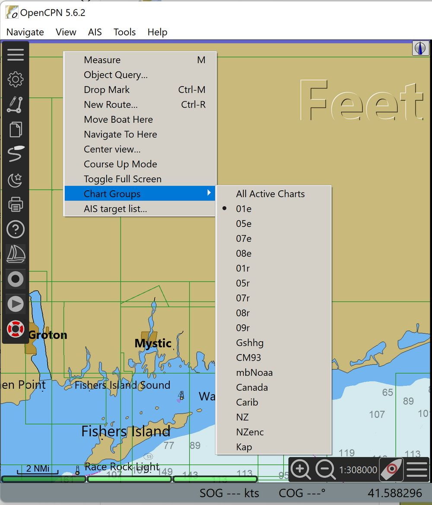
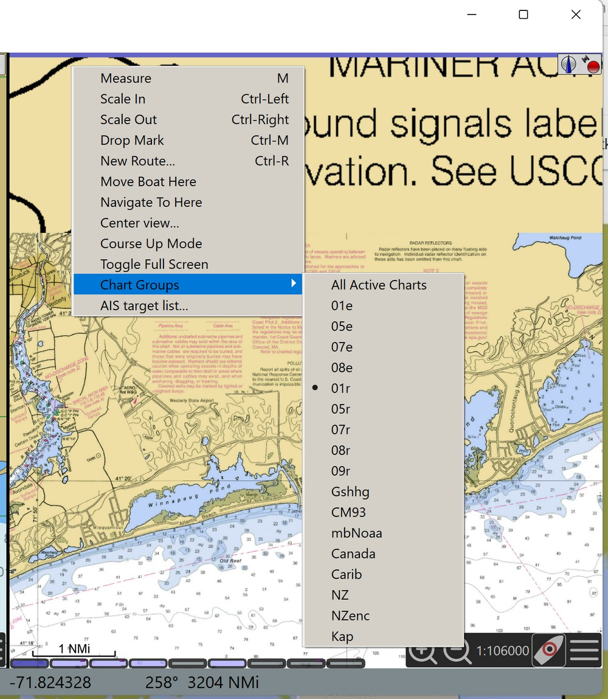
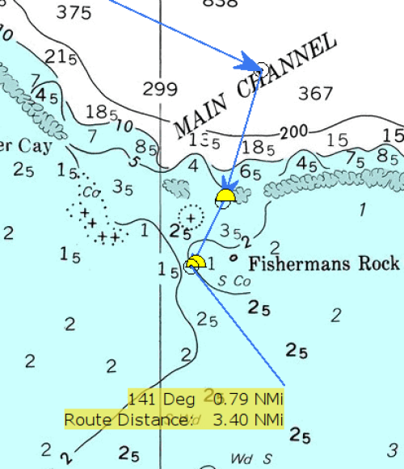
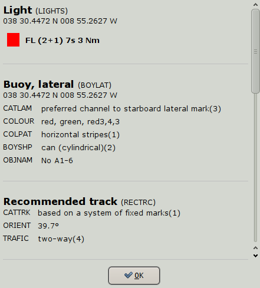
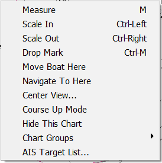

Right Click Menu
The right click menu is always available as long as the cursor is somewhere in the chart area. The content of this menu is very context sensitive. The reason for the "Focused Context Menus", is to keep the number of options down to a reasonable level, and still be able to deal with all situations. Additionally, many Plugins add items to the right-click menu.
There are basic right-click menus when clicking at a random point, and very focused menus when clicking on a waypoint, a route, a track or an AIS target. If you have just created or deleted a waypoint, or if chart groups are defined, there are further entries added to the basic menu. Some plugins also adds entries to the right-click menu when they are used. Below, the basic entries are explained.The more context specific entries are dealt with as the concerned feature is explained.
The basic single charts right-click menus.
Below is first the vector charts menu to the left and then the raster chart menu. Available "hotkeys", if any, are shown to the right.
 
Starting with the left menu for rastercharts.
Measure - M
Menubar > Tools
Activates a "pencil". Move the pencil with the cursor. Put the tip of the pencil on a position that you want to measure from. Left-click, a dot Position with a circle around is created. Move the pencil with the mouse and see the distance and bearing from the point to the pencil-tip in "real time". Left-clicking again creates a temporary waypoint. When moving the "pencil" again, distance and bearing, once again are shown from the temporary waypoint. The total distance from the original measure point, via the temporary wapoint(s) are also shown as "Route Distance". Right click and mark "Measure Off" to stop measuring.
For longer distances, specially on east.west courses on higher
latitudes, the measure tool seamlessly switches to display and measure
great circles instead of Mercator rhumb-lines. Read more
Great-circle
Sailing
The "Create Routes" tool works in a similar way, but you can’t use the
two tools at the same time.
Max Detail Here

Displays the largest scale, most detailed chart, available in the
position of the cursor.
It is assumed that there are more than one chart available at the
position.
Scale In
Displays the next larger scale chart.
It is assumed that there are more than one chart available at the
position.
Scale Out
Displays the next smaller scale chart.
It is assumed that there are more than one chart available at the
position.
Create a Mark
Drops a mark in the position of the cursor. Further explained on this
page Create a Route
Move Boat Here
Moves own boats position to the position pointed at. This item is only
visible in the right click-menu if the GPS isn’t connected.
Navigate to here
Creates an instant active route from own boat to the position clicked. The option does not appear when following an active route.
Center View
Activates a small dialog where latitude and longitude can be entered.
Pressing "OK" centers the display on this position, keeping the same
scale. If a position has been copied, and is in your copy buffer, it
will be displayed as default values. OpenCPN accepts a wide variety of
position formats. The values entered is kept during a session, but goes
when restarting OpenCPN.
Course Up Mode
Is shown because we are in North Up Mode. Clicking this entry changes
the display to "North Up Mode." It is a toggle switch between "North Up"
and "Course Up". Read more about display orientation:
navigation_mode
AIS Target List
Shows a list of discovered AIS targets, if any. Read more on
AIS
Looking at the right click menu for vector charts, to the right above,we
can see these additional entries.
Object Query
Every point on a vector-chart has certain attributes, or information.
This can vary from just the depth in mid ocean to much more. Double
clicking is an alternative to display the object query dialog. Here is
an example from a lateral buoy in the entrance channel to a medium sized
port.

The scrollbar on the right side of the dialog, reveals that more info is
available by scrolling down. Much more about this on the
Vector
Display
CM93 Offset Dialog
Apply corrections to CM93 chart cells through this dialog. Read more on
the CM93 Offsets
page in the Advanced section of this manual.
The basic quilted charts right-click menus, for raster charts and vector charts

The only new item in the quilted menus is
Hide this chart
The chart becomes excluded from the quilt. To show the chart again, find it in the chart bar, now marked with a red "<font inherit/inherit;;rgb(255,0,0);;inherit>X</font>", right click and press "Show this Chart". Read more here: Chart Quilting